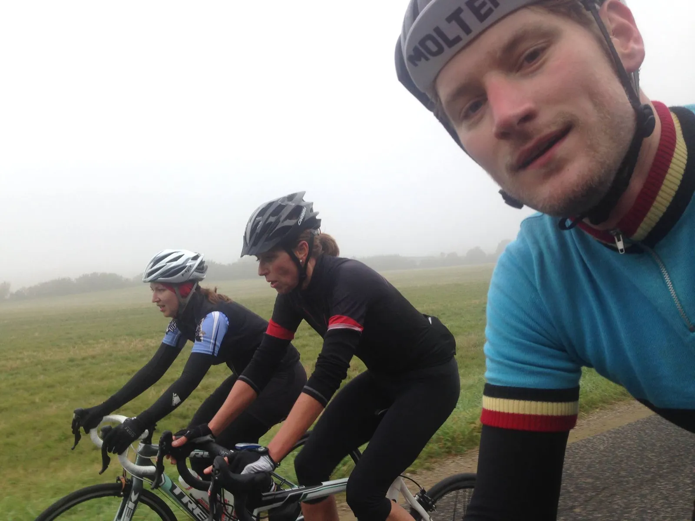

Aarhus-kvinder kører Squadra Molteni i sænk

Efter gårsdagens sæsonafslutningen har Squadra Molteni påtaget sig det ærefulde ansvar, det er, at guide Aarhus’ stærkeste kvindelige klatrer og temporytter rundt i terrænet. Det endte på grænsen af totalt kollaps og akut energi indsprøjtning.
I dag stod den på Pøt Mølle.
Tempoet blev skruet i vejret fra start, og holdets udsendte, Kasper Sørensen, måtte kort efter bakken i Hår, fingerer en falsk tissepause for at få luft.

Det holdt ham dog ikke fra at forsøge at imponere damerne.
Men det mislykkedes fælt, da han ville køre Pøt Mølle i den store klinge, og helt ude på møtrikken.
Mildest talt en pinlig affære! Kasper måtte straks efter hjemkomst, have en restitutionsindsprøjtning kulsort øl direkte årene for at undgå et totalt kollaps*.
*Holdets læge var tilstede under hele proceduren via en teleforbindelse over et Strava segment.